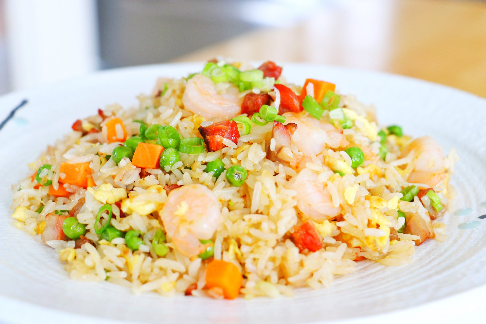

Fried Rice

An iconic dish worldwide! It is cheap and best of all, easy to make!
One of the most popular Chinese dishes around the world,
fried rice is the epitome of simple comfort food.
Ingredients
- Cooked, chilled rice
- Eggs
- Carrots, onions, green onions and peas
- Garlic
- Soy sauce
- Oyster sauce
- Toasted seasame oil
- Butter
Steps
- Scramble eggs
- Saute veggies and garlic
- Stir fry rice
- Remove pan from heat
- Taste and season
- Serve and enjoy!!!
Return to the homepage!